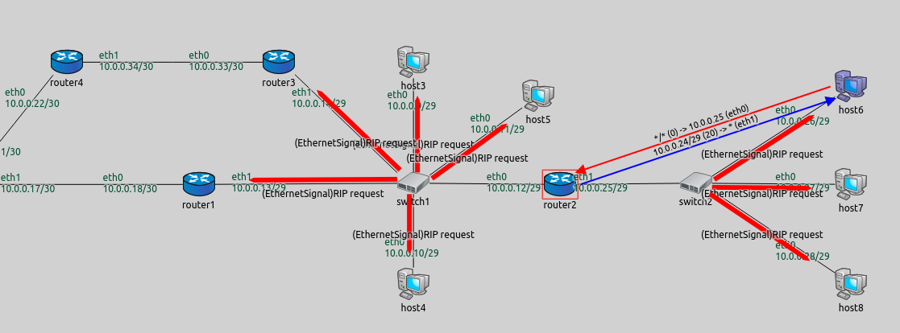
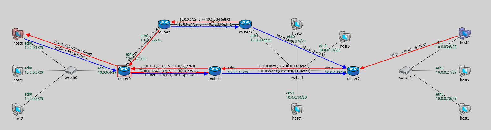
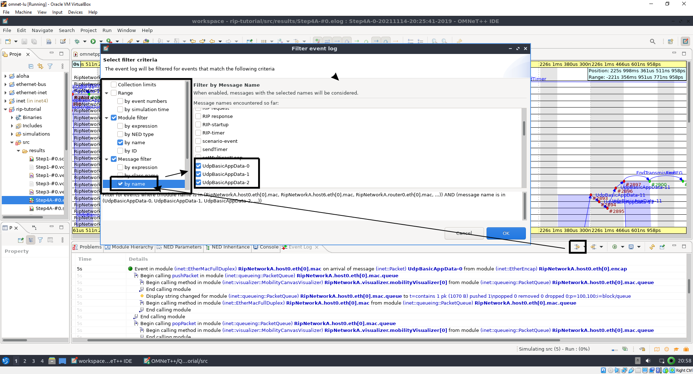
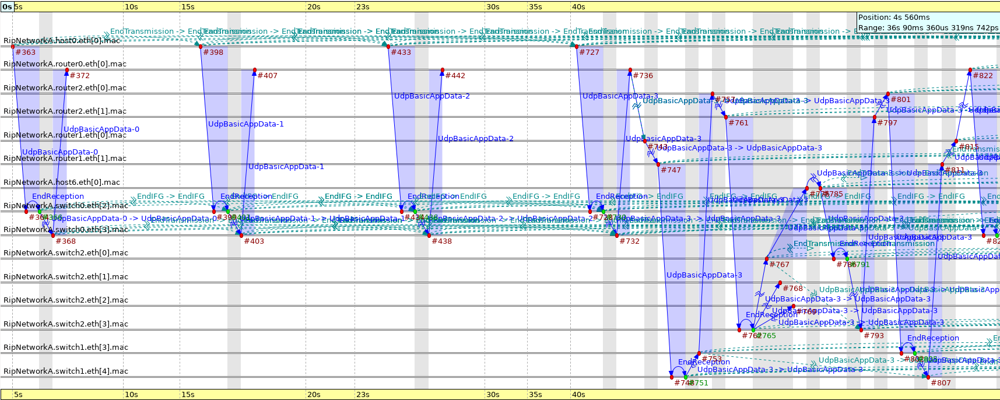

The purpose of this lab is to study the Routing Information Protocol (RIP), an early distance-vector routing protocol which relies on hop count. In particular, this lab looks at implementing RIP using the INET framework,and looks at analyzing the performance of the network.
Lab 5: Routing Information Protocol in OMNeT++ / INET
ENSE 472 - Digital Networks - Laboratory
University of Regina - Engineering and Applied Science - Software Systems Engineering
Lab Instructor: Adam Tilson
A Windows, Mac or Linux computer with OMNeT++ / INET installed. You may either install this yourself, or instead use the provided VirtualBox image which includes these applications installed in a light-weight Ubuntu environment. Please see Lab 3 for details on setting up the VirtualBox, especially if you experience a black screen on boot.
The Routing Information Protocol (RIP) is one of the oldest routing algorithms
- Unlikely to see much use today, but great to learn about routing
- In part popularized due to its inclusion in BSD Unix.
- Implementing Bellman-Ford and related algorithms, distance-vector routing protocols were used in precursors to the internet, and seek to find the best path to a destination network by minimizing hop count.
- This strategy ignores other important statistics such as time to reach the destination.
- Each router is responsible for keeping track of its routing table, connected networks, and the number of hops to each network.
- For example, a router A directly connected to network N would be zero hops away.
- Router B, connected to Router A, would be one hop away from N, and the next hop towards N would be Router A.
- These routing tables are broadcast to connected routers at regular intervals over UDP.
- Using these tables, each router can update its best path to each destination network by checking if the newly given path, plus one hop, is shorter than what’s currently in the routing table.
- After a number of iterations, the network will converge on optimal paths in terms of the least number of hops.
- The algorithm also adapts to networks as routers going down and come back online.
Background: An excellent overview of Distance Vector

On the upper path we can see 3 hops to reach our destination, on the lower path 4.
Real world example
On Windows, can we see how many hops it takes to get to a given server? Run tracert google.com
- Three packets are sent, and the time for each is displayed
Problems with RIP
Why is hop count no longer the best metric?
- Congestion

- Bandwidth
Benefits to RIP
- Easies to set up than Static Routing, and more adaptive
- Great for small networks, labs
Technical Details / Limitations
- Updates are sent every 30 seconds over broadcast, which can lead to congestion
- Particularly bad if routers send at the same time, better if updates are staggered
- If a router goes down, we wait 180 seconds (3 minutes) for the update, it is then marked invalid (unreachable)
- However, these entries are left in the table, and only removed at garbage collection (Flush) intervals, e.g. 120 or 240 seconds (2-4 minutes).
- Maximum hop count of 15 has rendered it impractical in the modern internet
- Older versions do not support Variable Length Subnet Masks (VLSM), e.g. /23, /22, /19, only the older Class-based (Class A, Class B, Class C, etc.)
This section is based on the OMNeT++ RIP Tutorial
Head to Part 1 here, download omnetpp.ini and the RipNetworkA.ned
- Start a new Omnet++ Project,
rip-tutorial - Reference in INET
- Open the File Manager (PCManFM-Qt) and navigate to
~/workspace/rip-tutorial/src - Drag and drop the
omnetpp.iniandRipNetworkA.nedinto yoursrcfolder.- If it is not working, you could instead download the files right from the terminal…
- open
QTerminalfrom the Applications menu -> System Tools -
cd ~/workspace/rip-tutorial/src -
wget https://inet.omnetpp.org/docs/_downloads/577859d0f9c9cfa45fcac193fae42e26/omnetpp.ini wget https://inet.omnetpp.org/docs/_downloads/6885266c9632f739e9242f9b68ef449c/RipNetworkA.ned
- open
- If it is not working, you could instead download the files right from the terminal…
- To see the newly added source files, in OMNeT++, right click on the
srcfolder and clickRefresh - Update the the
RipNetworkA.nedsource to have the package name match the package inpackage.ned,package rip_tutorial;
- Run the application by clicking on
omnetpp.ini, then run- Do not switch to release unless you built the release binaries in lab 3!
See the parameters in omnetpp.ini in the [Config Step1] section
[Config Step1]
description = "Static routing"
network = RipNetworkA
# do not add direct routes
*.configurator.addDirectRoutes = false
# Application parameters
*.host0.numApps = 1
*.host0.app[0].typename = "PingApp"
*.host0.app[0].destAddr = "host6"
*.*.ipv4.arp.typename = "GlobalArp"
# Visualizer settings
*.visualizer.interfaceTableVisualizer[0].displayInterfaceTables = true
In this version, we are simply allowing the configurator to pre-compute static routes to each of the connected devices, which is significantly less painful than doing it ourselves, as we experienced in Lab 2 (Packet Tracer). We are also using the PingApp on host0, and attempting to ping host6.

Note that static routes are displayed only on the routers, not the switches. Why is this?
Let’s look at the first iteration of RIP
[Config Step2]
description = "Pinging after RIP convergence"
network = RipNetworkA
# adding default routes in all hosts
*.configurator.config = xml("<config> \
<interface hosts='**' address='10.x.x.x' netmask='255.x.x.x'/> \
<autoroute sourceHosts='host*'/> \
</config>")
*.configurator.addStaticRoutes = true
# RIP parameters on routers
*.router*.hasRip = true
*.router*.rip.startupTime = uniform(0s,1s)
# disable advanced features for now!
*.router*.rip.ripConfig = xml("<config> \
<interface hosts='router*' mode='NoSplitHorizon' /> \
</config>")
*.router*.rip.triggeredUpdate = false
# Application parameters
*.host0.numApps = 1
*.host0.app[0].typename = "PingApp"
*.host0.app[0].destAddr = "host6"
*.host0.app[0].startTime = 50s
# turning on global ARP to focus on the RIP messages
*.*.ipv4.arp.typename = "GlobalArp"
# Visualizer settings
*.visualizer.interfaceTableVisualizer[0].displayInterfaceTables = true
We can see that Static Routes are configured via XML. Recall how this was done in Packet Tracer from the command line.
We also see RIP is configured via XML. In particular, we see NoSplitHorizon is set. This is an advanced feature of RIP. Without it, when a router receives new tables from an adjacent router, if these new tables cause an update in its own tables, it will echo that new route back to the node which caused the update. This can decrease network stability if a link goes down, and neither of the communicating routers knows has a route back to the router which went down. This is called the count to infinity problem.
When we demo this, we can see RIP updates propagating, and once a new path is found, arrows are drawn to visualize.

You may see visualizations of function calls. These are the function calls which update RIP. If you want to not visualize them, right click on the canvas and go to Animation Settings -> Uncheck Animate method calls
In this section, we are going to see what happens when a link goes down. In particular, the connection to host6 will be severed at 50 seconds.
[Config Step3]
description = "Link breakage"
extends = Step2
# Enable split horizon in order for the scenario to work properly
*.router*.rip.ripConfig = xml("<config> \
<interface hosts='router*' mode='SplitHorizon' /> \
</config>")
# Disable ping application
*.host0.numApps = 0
*.scenarioManager.script = xml("<scenario> \
<disconnect t='50' src-module='router2' dest-module='switch2' /> \
</scenario>")
When we simulate this one, we see the link go down between the 30s and 60s updates:

Link Recovery - 3 Scenarios
Next we’ll look at three scenarios for the link coming back online,
- Before the link is invalidated
- After the link is invalidated
- After the link is flushed
In these scenarios, we’ll instead break the connection between
You will need to add the following to src/scenario5.xml, src/scenario6.xml and src/scenario7.xml, respectively
In src/scenario5.xml:
<scenario>
<at t="50">
<disconnect src-module="router2" dest-module="switch1" />
</at>
<at t="150">
<connect src-module="router2" src-gate="ethg$o[0]" dest-module="switch1" dest-gate="ethg$i[3]" channel-type="inet.node.ethernet.Eth10M" />
<connect src-module="switch1" src-gate="ethg$o[3]" dest-module="router2" dest-gate="ethg$i[0]" channel-type="inet.node.ethernet.Eth10M" />
</at>
</scenario>
In src/scenario6.xml:
<!-- scenario6.xml -->
<scenario>
<at t="50">
<disconnect src-module="router2" dest-module="switch1" />
</at>
<at t="300">
<connect src-module="router2" src-gate="ethg$o[0]" dest-module="switch1" dest-gate="ethg$i[3]" channel-type="inet.node.ethernet.Eth10M" />
<connect src-module="switch1" src-gate="ethg$o[3]" dest-module="router2" dest-gate="ethg$i[0]" channel-type="inet.node.ethernet.Eth10M" />
</at>
</scenario>
In src/scenario7.xml:
<!-- scenario7.xml -->
<scenario>
<at t="50">
<disconnect src-module="router2" dest-module="switch1" />
</at>
<at t="602">
<connect src-module="router2" src-gate="ethg$o[0]" dest-module="switch1" dest-gate="ethg$i[3]" channel-type="inet.node.ethernet.Eth10M" />
<connect src-module="switch1" src-gate="ethg$o[3]" dest-module="router2" dest-gate="ethg$i[0]" channel-type="inet.node.ethernet.Eth10M" />
</at>
</scenario>
These scenarios are loaded in each of the 4X configs:
[Config Step4A]
description = "RIP timers: Link comes back online before the timeout timer expires"
extends = Step2
# Enable split horizon in order for the scenario to work properly
*.router*.rip.ripConfig = xml("<config> \
<interface hosts='router*' mode='SplitHorizon' /> \
</config>")
# disable ping application
*.host0.numApps = 0
# Break the router2 <--> switch1 link at t=50 s. and reconnect at t=150 s.
*.scenarioManager.script = xmldoc("scenario5.xml")
[Config Step4B]
description = "RIP timers: Link comes back online before the garbage-collection timer expires"
extends = Step2
# (garbage-collection timer is also called hold-down timer)
# Break the router2 <--> switch1 link at t=50 s. and reconnect at t=300 s.
*.scenarioManager.script = xmldoc("scenario6.xml")
[Config Step4C]
description = "RIP timers: Link comes back online after the garbage-collection timer expires"
extends = Step2
# Break the router2 <--> switch1 link at t=50 s. and reconnect at t=400 s.
*.scenarioManager.script = xmldoc("scenario7.xml")
There are still some additional features of RIP that are worth investigating, such as triggered updates (when a device receives an update from a neighbor, which causes it to update its routes, it immediately sends those updates out to its neighbors, so that they can stay up to date. However, this has problems too, such as the count to infinity problem, addressed with Split Horizon or Split Horizon with Poisoning. For now we will keep it simple and stick to this phase for the assignment.
- Your goal is to create sequence charts to visualize the network behavior in terms of packets location at the destination in each of the three scenarios described in the previous section
- Perform the following tasks:
- Replace the Application on host0 with the UDPBasicApp
- Replace the application on host6 with the UDPEchoApp
- Configure the application to send packets approximately every 15 seconds, starting at t=5 seconds, from host0 to host6
- Run the simulation for 12 minutes simulated time.
- Track the locations of the packets over time in a sequence graph
- Review lab 3 for more information if you are stuck
- Reminder - you need to turn on event logging
- Track the locations of the packets over time in a sequence graph
- In a 1-2 page report, add your graphs, and make some comments on what is happening in the system at each of the times of the drops.
- In particular, comment on when paths are changing and why
- Comment also on when the network is down
- You may wish to zoom in on graphs at different times to highlight particular behaviour
- Important: Do not include your entire graphs! Just take snippets of important areas: when things change!
Hints:
When setting up your apps, look at the inheritance of the scenarios in omnetpp.ini and ensure your apps are getting run!
- Are they being inherited by the inheriting scenario?
- Are they getting turned off in in the inheriting state?
Use the event log filters to only show important nodes, as well as only the messages you care about!
Module Filter -> by name -> host* / router* -> Eth* -> mac
Message Filter -> by name -> UdpBasicAppData*

Chart Example: Sending packets before RIP completes: 
References
L. Peterson and B. Davie, 3.4 Routing, Computer Networks: A Systems Approach, 2019. [Online]
OMNeT++ / Inet. RIP Routing Tutorial, INET Framework. [Online].